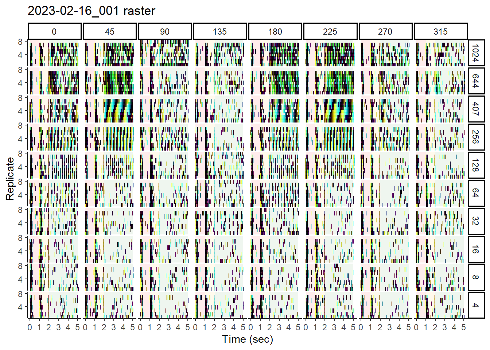

6 Raster and mean spike rate plots
6.1 Data sets
This section will rely on some of the unbinned and binned data we exported in final steps of the previous section. We’ll start by loading in information
## File paths and basenames of _unbinned.csv files
unbinned_filelist <-
list.files("./data/", pattern = "_unbinned.csv",
full.names = TRUE)
unbinned_basenames <-
unbinned_filelist %>%
str_remove("./data/") %>%
str_remove("_unbinned.csv")
## File paths and basenames of _binsize10.csv files
bin10_filelist <-
list.files("./data/", pattern = "_binsize10.csv",
full.names = TRUE)
bin10_basenames <-
bin10_filelist %>%
str_remove("./data/") %>%
str_remove("_binsize10.csv")
## File paths and basenames of _binsize100.csv files
bin100_filelist <-
list.files("./data/", pattern = "_binsize100.csv",
full.names = TRUE)
bin100_basenames <-
bin100_filelist %>%
str_remove("./data/") %>%
str_remove("_binsize100.csv")You should have something similar to the following:
unbinned_filelist; unbinned_basenames; bin10_filelist; bin10_basenames; bin100_filelist; bin100_basenames## [1] "./data/04132022_009m_unbinned.csv"## [1] "04132022_009m"## [1] "./data/04132022_009m_binsize10.csv"## [1] "04132022_009m"## [1] "./data/04132022_009m_binsize100.csv"## [1] "04132022_009m"6.2 Raster plot
Here is an example of a raster plot, using the wrangled data generated in the previous section. This type of plot shows the timing of spike events within each replicate sweep, and for our purposes, we’ll produce a view of this for each of the various stimulus conditions
It is important to note that we will need unbinned data for this. This is because a raster plot shows discrete spiking events through the course of a time sweep.
## Read in unbinned data
unbinned_data <-
read_csv("./data/04132022_009m_unbinned.csv", show_col_types = FALSE) %>%
as_tibble()
## Generate the code for the ggplot and save it as "plot"
rasterplot <-
unbinned_data %>%
## Remove any rows where spiking does not occur in the Spikes column
filter(Spikes == 1) %>%
## Convert Trial and Speed into factors and specify their level ordering
## This will make it easier to get the subplots in the order we want them
mutate(Trial = factor(Trial, levels = c("blank", "stationary", "moving")),
Speed = factor(Speed, levels = c(1024, 256, 32, 4, 0.5, 0.062))) %>%
ggplot(aes(x = Time_stand, y = Replicate)) +
## The next three blocks will undershade each subplot according to stimulus
## phase (i.e., blank, stationary, moving)
annotate("rect",
xmin = 0, xmax = first(unbinned_data$Blank_end),
ymin = 0.5, ymax = 10.5,
alpha = 0.1, color = NA, fill = "red") +
annotate("rect",
xmin = first(unbinned_data$Blank_end),
xmax = first(unbinned_data$Static_end),
ymin = 0.5, ymax = 10.5,
alpha = 0.1, color = NA, fill = "darkgoldenrod1") +
annotate("rect",
xmin = first(unbinned_data$Static_end), xmax = 5,
ymin = 0.5, ymax = 10.5,
alpha = 0.1, color = NA, fill = "forestgreen") +
## Up to 10 replicates were used, so we will force the y-axis to go to 10
scale_y_continuous(
limits = c(0.5, 10.5),
expand = c(0, 0),
breaks = c(5, 10)
) +
## There are multiple ways to plot a spike event. Since 100% of the rows in
## this filtered data set are spike events, we can simply plot a symbol at
## each time (Time_stand) that appears in the data. The `|` symbol is a good
## choice.
geom_point(pch = '|', size = 1.5) +
xlab("Time (sec)") +
ggtitle(paste0("04132022_009m raster")) +
## Use facet_grid() to create a grid of subplots. Rows will correspond to
## Speeds, and columns correspond to Directions
facet_grid(rows = vars(Speed), cols = vars(Direction)) +
theme_classic() +
theme(legend.position = 'none',
panel.spacing = unit(0.1, "lines"))
rasterplot
6.2.1 Export to PDF
Should you elect to export this plot by itself to a PDF, you can do the
following:
## Should you elect to export this as a PDF
pdf(
file = "./path/to/directory/filename.pdf",
width = 10.5,
height = 8,
title = "04132022_009m raster",
paper = "USr",
bg = "white",
pagecentre = TRUE,
colormodel = "srgb"
)
plot(rasterplot)
dev.off()